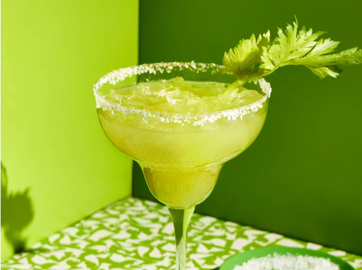

Celery Margarita
7
Description
This celery margarita is a fun and unexpected riff on a classic margarita using a homemade celery cordial. A cordial is a sweetened spirit or a nonalcoholic combination of sugar, water, spices, and fruits or veggies.
Ingredients
- 1 tablespoon kosher salt
- 1/4 teaspoon ground coriander
- 1 lime wedge
- ice, as needed
- 1 1/2 fluid ounces tequila
- 1 1/2 fluid ounces celery cordial
- 3/4 fluid ounce lime juice
- 3 dashes celery bitters (optional)
- leafy celery stalk, for garnish
- Mix salt and coriander together on a small plate. Wipe rim of a margarita glass with lime wedge. Dip rim in salt mixture to coat. Fill glass with crushed ice.
- Fill a cocktail shaker half full with ice. Add tequila, celery cordial, lime juice, and bitters to shaker; cover and shake until outside of shaker is frosted, about 60 seconds. Strain into prepared glass and garnish with celery stalk.